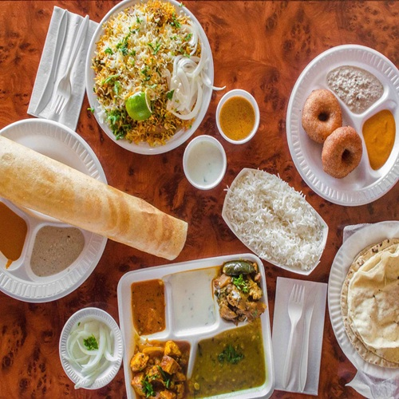

Welcome to South Indian Food
South India has a rich food culture known for its flavors, spices, and unique dishes. From breakfast favorites like dosa and idli to biryani and aromatic chai and filter coffee, our cuisine is a delightful experience.
Explore the pages to learn about the history, types, and cultural significance of these foods and the spices that make them unique.